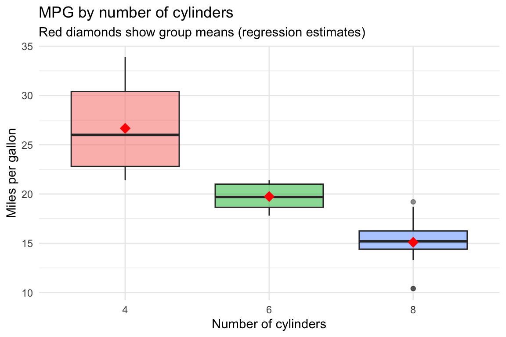
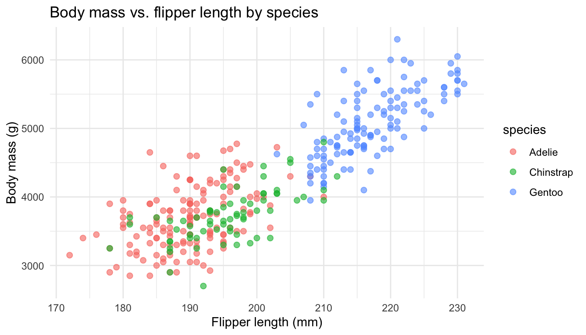
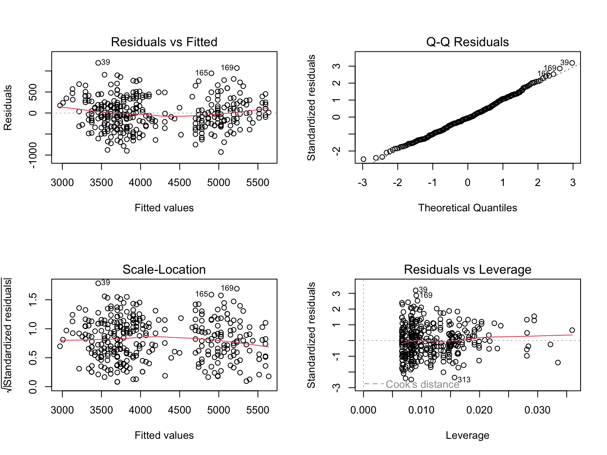

Multiple regression includes more than one predictor \[Y = \beta_0 + \beta_1 X_1 + \beta_2 X_2 + \cdots + \beta_p X_p + \epsilon\]
Each coefficient \(\beta_j\) represents the effect of \(X_j\) on \(Y\), holding other predictors constant
R syntax:
mpg cyl disp hp drat wt qsec vs am gear carb
Mazda RX4 21.0 6 160 110 3.90 2.620 16.46 0 1 4 4
Mazda RX4 Wag 21.0 6 160 110 3.90 2.875 17.02 0 1 4 4
Datsun 710 22.8 4 108 93 3.85 2.320 18.61 1 1 4 1
Hornet 4 Drive 21.4 6 258 110 3.08 3.215 19.44 1 0 3 1
Hornet Sportabout 18.7 8 360 175 3.15 3.440 17.02 0 0 3 2
Valiant 18.1 6 225 105 2.76 3.460 20.22 1 0 3 1mpg: miles per gallonwt: weight (1000 lbs)hp: horsepowercyl: number of cylinders
Call:
lm(formula = mpg ~ wt + hp, data = mtcars)
Residuals:
Min 1Q Median 3Q Max
-3.941 -1.600 -0.182 1.050 5.854
Coefficients:
Estimate Std. Error t value Pr(>|t|)
(Intercept) 37.22727 1.59879 23.285 < 2e-16 ***
wt -3.87783 0.63273 -6.129 1.12e-06 ***
hp -0.03177 0.00903 -3.519 0.00145 **
---
Signif. codes: 0 '***' 0.001 '**' 0.01 '*' 0.05 '.' 0.1 ' ' 1
Residual standard error: 2.593 on 29 degrees of freedom
Multiple R-squared: 0.8268, Adjusted R-squared: 0.8148
F-statistic: 69.21 on 2 and 29 DF, p-value: 9.109e-12[1] 0.7528328[1] 0.8267855Analysis of Variance Table
Model 1: mpg ~ wt
Model 2: mpg ~ wt + hp
Res.Df RSS Df Sum of Sq F Pr(>F)
1 30 278.32
2 29 195.05 1 83.274 12.381 0.001451 **
---
Signif. codes: 0 '***' 0.001 '**' 0.01 '*' 0.05 '.' 0.1 ' ' 1hp significantly improves the modelcyl can be 4, 6, or 8
Call:
lm(formula = mpg ~ cyl, data = mtcars)
Residuals:
Min 1Q Median 3Q Max
-5.2636 -1.8357 0.0286 1.3893 7.2364
Coefficients:
Estimate Std. Error t value Pr(>|t|)
(Intercept) 26.6636 0.9718 27.437 < 2e-16 ***
cyl6 -6.9208 1.5583 -4.441 0.000119 ***
cyl8 -11.5636 1.2986 -8.905 8.57e-10 ***
---
Signif. codes: 0 '***' 0.001 '**' 0.01 '*' 0.05 '.' 0.1 ' ' 1
Residual standard error: 3.223 on 29 degrees of freedom
Multiple R-squared: 0.7325, Adjusted R-squared: 0.714
F-statistic: 39.7 on 2 and 29 DF, p-value: 4.979e-09ggplot(mtcars, aes(x = cyl, y = mpg, fill = cyl)) +
geom_boxplot(alpha = 0.5) +
stat_summary(fun = mean, geom = "point", shape = 18, size = 4, color = "red") +
labs(title = "MPG by number of cylinders",
subtitle = "Red diamonds show group means (regression estimates)",
x = "Number of cylinders", y = "Miles per gallon") +
theme_minimal() +
theme(legend.position = "none")
| Function | Purpose | Example |
|---|---|---|
lm() |
Fit linear model | lm(y ~ x, data = df) |
summary() |
Model summary statistics | summary(model) |
coef() |
Extract coefficients | coef(model) |
confint() |
Confidence intervals | confint(model) |
predict() |
Make predictions | predict(model, newdata) |
plot() |
Diagnostic plots | plot(model) |
anova() |
Compare models | anova(model1, model2) |
| Formula | Meaning |
|---|---|
y ~ x |
Simple regression: y on x |
y ~ x1 + x2 |
Multiple regression: y on x1 and x2 |
y ~ x1 + x2 + x1:x2 |
Include interaction between x1 and x2 |
y ~ x1 * x2 |
Equivalent to y ~ x1 + x2 + x1:x2 |
y ~ . |
Use all other variables as predictors |
y ~ x - 1 |
Regression without intercept |
tibble [344 × 8] (S3: tbl_df/tbl/data.frame)
$ species : Factor w/ 3 levels "Adelie","Chinstrap",..: 1 1 1 1 1 1 1 1 1 1 ...
$ island : Factor w/ 3 levels "Biscoe","Dream",..: 3 3 3 3 3 3 3 3 3 3 ...
$ bill_length_mm : num [1:344] 39.1 39.5 40.3 NA 36.7 39.3 38.9 39.2 34.1 42 ...
$ bill_depth_mm : num [1:344] 18.7 17.4 18 NA 19.3 20.6 17.8 19.6 18.1 20.2 ...
$ flipper_length_mm: int [1:344] 181 186 195 NA 193 190 181 195 193 190 ...
$ body_mass_g : int [1:344] 3750 3800 3250 NA 3450 3650 3625 4675 3475 4250 ...
$ sex : Factor w/ 2 levels "female","male": 2 1 1 NA 1 2 1 2 NA NA ...
$ year : int [1:344] 2007 2007 2007 2007 2007 2007 2007 2007 2007 2007 ...
Call:
lm(formula = body_mass_g ~ flipper_length_mm + species, data = penguins_clean)
Residuals:
Min 1Q Median 3Q Max
-927.70 -254.82 -23.92 241.16 1191.68
Coefficients:
Estimate Std. Error t value Pr(>|t|)
(Intercept) -4031.477 584.151 -6.901 2.55e-11 ***
flipper_length_mm 40.705 3.071 13.255 < 2e-16 ***
speciesChinstrap -206.510 57.731 -3.577 0.000398 ***
speciesGentoo 266.810 95.264 2.801 0.005392 **
---
Signif. codes: 0 '***' 0.001 '**' 0.01 '*' 0.05 '.' 0.1 ' ' 1
Residual standard error: 375.5 on 338 degrees of freedom
Multiple R-squared: 0.7826, Adjusted R-squared: 0.7807
F-statistic: 405.7 on 3 and 338 DF, p-value: < 2.2e-16 (Intercept) flipper_length_mm speciesChinstrap speciesGentoo
-4031.4769 40.7054 -206.5101 266.8096 
fit lwr upr
1 4783.467 4040.52 5526.413Leo Breiman (2001) identified two cultures in statistical modeling:
Culture 1: Data Modeling
Culture 2: Algorithmic Modeling
lm(response ~ predictors, data = dataset)summary(), coef(), confint(), and predict() to interpret results